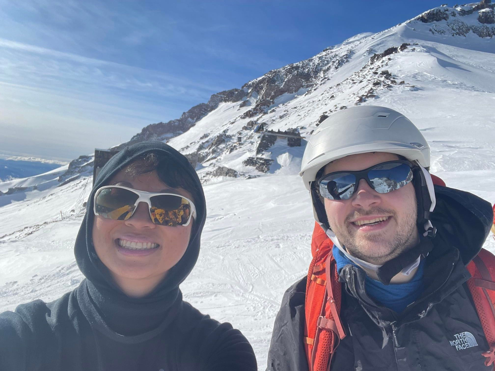
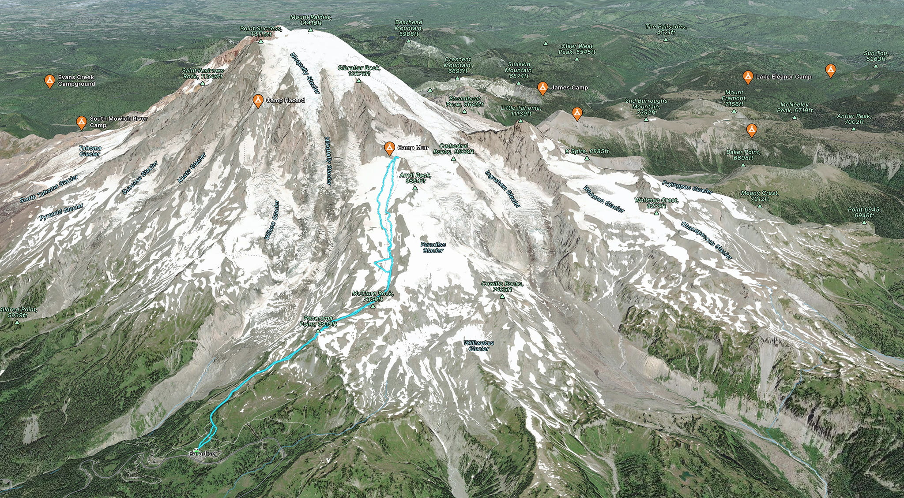
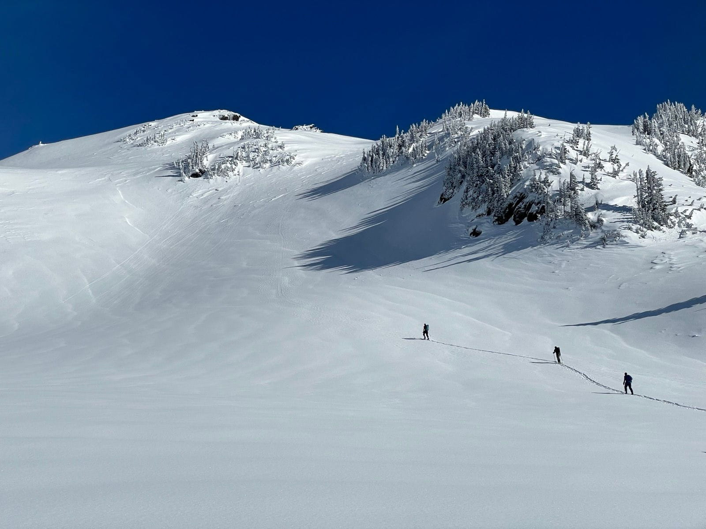
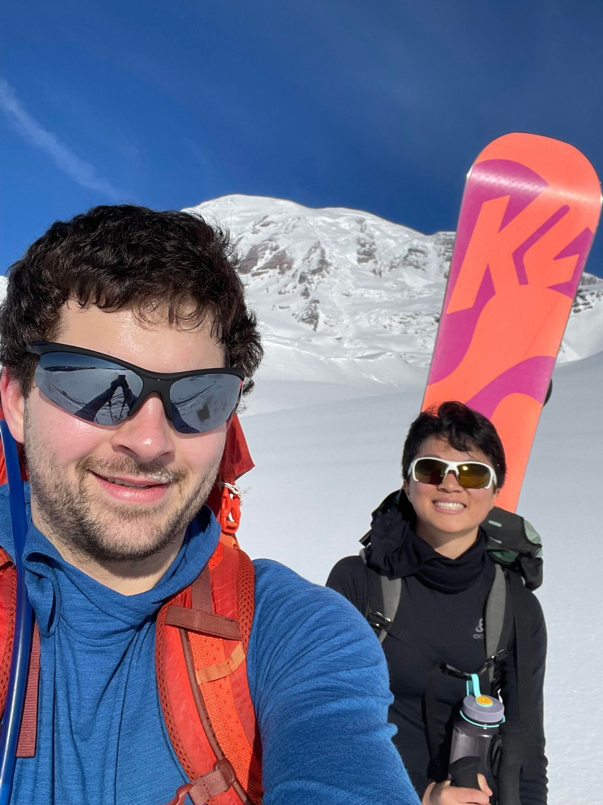

Winter access in Mt. Rainier National Park has been tricky this year. The stars really have to align for this to work, and I had never successfully got to Camp Muir (10,000') in the winter until today. There will be more of an emphasis on time than normal this trip report, because the 9:00am - 4:00pm Longmire Gate forces a late start at 9:40am and early turn around time of 2 - 2:30pm.

About the Route
The winter route to Camp Muir (~10,000') is similar to the summer route, except for skipping the switchbacks underneath a steep avalanche slope, preferring the 31 degree "panorama face".
https://fatmap.com/routeid/3150379/winter-route-camp-muir?fmid=cp,
https://www.strava.com/activities/8545601879 has the route I took. The route gains ~4.6k vertical feet in about ~4.5 miles.

Constraints
1) Saturday & Sunday only (removes 5/7 days)
2) Some days are rejected due to poor weather forecast
3) Some days are rejected due to poor avalanche conditions
4) Gate opens at 9:00am - 4:00pm at Longmire, meaning 9:30am to 3:30pm at the Paradise lot (plus any chains / other trickyness necessary).
4b) At times, the gate opens a bit late say, 9:30-10:00am, or perhaps not at all
4c) If conditions are poor on the descent, it's necessary to set an earlier turnaround time of like 2pm, rather than 2:30pm, since whiteouts require slower skiing and frequent GPS checks (or compass/map/altimeter checks). Gaining 5k vert is very hard before 2pm.
5) For me personally, I choose to carry overnight bivy equipment, that make say ~20F survivable, or 0F survivable inside the camp muir emergency hut. This adds about 8 lb of jackets, sleeping bags, foam, bivy sack.
The Climb
On 02/11/2023, the stars align and Claire and I decided to make an attempt. I awakened at 5am, packed, and left Seattle by 6am and arrived at Longmire at 8:30am or so. The weather was as good as it gets, ~30 degrees at paradise and ~22 degrees at 10,000', with hot sun and no wind. Avalanche conditions were at 1 in treeline, 2 at treeline and 2 above treeline. The sky was blue the entire day, it was possible to see MSH, Adams, and even Mt. Hood from the snowfield. The gate opened at 9am, and after letting most of the crowd dissipate crossed the gate at 9:10am. The 2wd non-winter-tires sedan was coaxed up to paradise by 9:40am (didn't have to use the chains this time).
I put on my AT skis (skins were put on at Longmire), Claire put on snowshoes and put the downhill snowboard in the backpack, and off we went at 9:49am. Conditions were great for ascending, and after ~40 minutes we were staring down an untracked panorama face. The youtube video on kick turns paid off and 12/12 successful kick-turns later, we had efficiently climbed to Panorama Point in about 70 minutes.

The Muir snowfield is a straightforward ascent, and it's a bit of a grind. Up for 3200 vertical feet'.

Ascending the Muir snowfield took about 3 hours, and the massive throngs had diminished to about 10-20 folks up there. Claire was the only snowshoe user up there (carried a downhill board as well!), and might have been highest elevation snowshoer in WA on 02/11/2023. We spent about 20 minutes at Muir, during which I checked out the public emergency hut (which had some snow inside, but was still usable). Much too soon, it was 2:30pm and time to ski/snowboard down. At 3:30pm we arrived at the upper parking lot, and dutifully exited the Longmire gate at ~4:05pm.
This was a perfect winter backcountry ski day, and accomplished a goal of mine that has turned me back many times (including one at 9400'). However, I prefer a bit more slack in the schedule with more time hanging out, and have attempted to go to Muir ~7 times by now (4/4 success in the summer, 1/3 success in the winter), so if I go back to MRNP in winter I'll start at Longmire with a proper alpine start, and check out some other regions of the park.
Total Elapsed Time car2car: 5:46:44